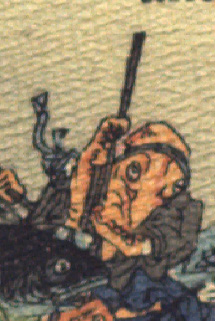

蛸の化物。体は赤く、丸い目玉が顔の脇についており、額に鉢巻きのようなものを締めている。墨色の着物と青い袴をまとい、袖から吸盤のついた脚をだし、棒を振り上げている。
著作者：J.Dautremer／出典：親書誌：U426_nichibunken_0107：La meduse simple et naïve／日付：2006／資源識別子：U426_nichibunken_0107_0008_0006
Copyright (c)2010- International Research Center for Japanese Studies, Kyoto, Japan. All rights reserved.